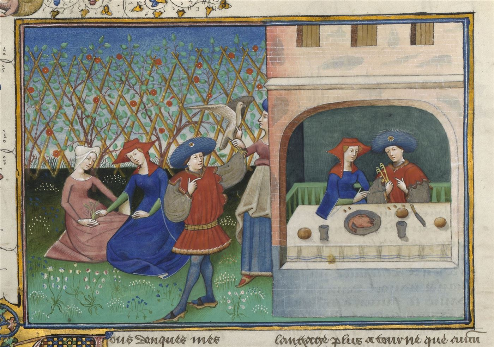

Federigo degli Alberighi
Un cavaliere dal cuore generoso ma ingenuo. Capirà col tempo che il vero valore non si dimostra sperperando soldi, ma nei gesti sinceri.
NOVELLA 02 · DECAMERON V, 9
QUINTA GIORNATA · AMORI A LIETO FINE DOPO TANTE SFORTUNE
Un nobile perde tutto per amore e si ritrova a vivere in povertà con il suo falcone. Quando la donna amata va a trovarlo, compie un sacrificio disperato pur di farle onore.

01 / IN BREVE
Federigo degli Alberighi è un giovane nobile fiorentino, generoso e innamorato perdutamente di Monna Giovanna. Pur di conquistarla, spende tutto il suo patrimonio in feste, tornei e regali, ma lei non cede mai. Rimasto senza un soldo, Federigo si ritira in un piccolo podere in campagna: dell'antica ricchezza gli resta soltanto un magnifico falcone da caccia, il suo unico compagno.
Qualche anno dopo, Monna Giovanna resta vedova e trascorre l'estate in una tenuta vicina a quella di Federigo insieme al figlio. Il ragazzino fa amicizia con lui e resta affascinato dal falcone. Quando si ammala gravemente, confida alla madre che l'unica cosa che potrebbe farlo guarire è proprio avere quell'uccello.
Per amore del figlio, Giovanna mette da parte l'imbarazzo e va a trovare Federigo, fermandosi a pranzo da lui. Federigo vorrebbe offrirle qualcosa di speciale, ma la dispensa è vuota: così, senza pensarci due volte, sacrifica il suo amato falcone e glielo serve a tavola.
Solo a fine pasto Giovanna gli rivela il vero motivo della visita. Federigo scoppia in lacrime mostrandole le piume e il becco del falcone ormai cucinato. Colpita da un gesto così generoso e disinteressato, Giovanna comprende finalmente la grandezza d'animo di quell'uomo. Poco tempo dopo il figlio purtroppo muore e i fratelli la spingono a risposarsi: Giovanna sceglie Federigo perché preferisce un uomo di valore anche se povero, rispetto a un uomo ricco ma senza valori. Sposandola, però, Federigo diventa ricchissimo grazie al patrimonio di lei e impara finalmente ad amministrare bene i soldi.
Federigo degli Alberighi è un giovane nobile di Firenze, ammirato da tutti per la sua cortesia. Si innamora perdutamente di monna Giovanna, considerata tra le donne più belle e stimate della città. Per mettersi in mostra e cercare di conquistarla, organizza tornei d'armi, feste e banchetti costosi, riempiendola di doni preziosi. Giovanna però è una donna onesta e sposata, e non presta la minima attenzione ai suoi corteggiamenti.
A furia di spendere senza freno, Federigo consuma tutto il suo patrimonio e finisce in povertà. Incapace di mantenere la vita da signore, decide di ritirarsi in silenzio in un modesto podere a Campi, poco lontano da Firenze. Lì vive lavorando la terra e andando a caccia. L'unica ricchezza che gli resta è un magnifico falcone, a cui è legatissimo e che gli permette di procurarsi del cibo.
Passano gli anni e il marito di Giovanna si ammala e muore, lasciando il loro unico figlio erede di grandissime ricchezze. D'estate, Giovanna si trasferisce con il bambino in una villa di campagna proprio vicina a quella di Federigo. Il ragazzino fa amicizia con lui, comincia ad appassionarsi agli uccelli da caccia e resta affascinato dal falcone. Vorrebbe tanto averlo per sé, ma sapendo quanto Federigo ci tenga, non osa chiederglielo.
Poco dopo il ragazzino cade gravemente malato. La madre, disperata, fa di tutto per tirarlo su di morale e gli domanda se c'è qualcosa che desidera: il bambino risponde che guarirebbe se potesse avere il falcone di Federigo. Giovanna si sente in grande imbarazzo. Sa quanto Federigo l'ha amata e quanto ha sofferto per lei, e sa bene che quel falcone è l'unica cosa preziosa che gli è rimasta. Chiederglielo le sembra ingiusto e crudele. Ma l'amore per il figlio vince ogni esitazione, così decide di andare di persona a trovarlo.
La mattina successiva Giovanna si presenta a casa di Federigo insieme a un'amica. Federigo stenta a credere ai propri occhi: la donna dei suoi sogni bussa alla sua porta! Giovanna gli dice con garbo che è venuta per pranzare con lui. Per Federigo è il momento più bello della vita, ma la gioia lascia subito spazio allo sconforto: in casa non ha niente di commestibile da offrire a una signora del suo rango.
Preso dall'ansia di fare bella figura e non volendo chiedere elemosina ai vicini, il suo sguardo cade sul fedele falcone. In un lampo prende la decisione: gli tira il collo e lo fa arrostire subito, convinto che sia l'unica pietanza degna dell'ospite. Le due donne mangiano con lui, senza minimamente sospettare cosa ci sia nel piatto.
Terminato il pranzo, Giovanna prende coraggio e confessa la verità: racconta della grave malattia del figlio e lo supplica di donarle il falcone per salvarlo. A quelle parole Federigo rimane impietrito e scoppia a piangere disperato. Appena ritrova la voce, le spiega la tragica verità: pur di onorarla come meritava, glielo ha appena servito a tavola. Per provarlo, va a prendere le piume e le zampe rimaste in cucina.
Giovanna è straziata dal dolore per il figlio, ma al tempo stesso resta commossa dalla grandezza d'animo di Federigo, che pur non avendo nulla ha rinunciato alla sua unica ricchezza solo per accoglierla. Pochi giorni dopo, purtroppo, il ragazzino muore.
Rimasta sola e ancora giovane, Giovanna viene sollecitata dai fratelli a risposarsi. Lei all'inizio si oppone, ma poi pone una condizione: o sposerà Federigo, oppure non prenderà nessun altro. Ai fratelli che la deridono perché Federigo è ormai un poveraccio, lei risponde fermamente che preferisce un uomo a cui manca la ricchezza, piuttosto che una ricchezza a cui manca un uomo. Di fronte a quella determinazione i fratelli cedono. I due si sposano, e Federigo, reso saggio dall'esperienza, amministra con giudizio i beni della moglie vivendo con lei in pace.
03 / I PERSONAGGI
Quattro figure muovono il racconto, legate da affetto e scelte difficili:
Un cavaliere dal cuore generoso ma ingenuo. Capirà col tempo che il vero valore non si dimostra sperperando soldi, ma nei gesti sinceri.
Donna onesta e decisa. Fa di tutto per il figlio e ha il coraggio di scegliere un uomo per il suo cuore e non per le sue ricchezze.
Il bambino il cui desiderio infantile innesca l'incontro tra i due, rendendo la storia toccante e drammatica.
Molto più di un animale: è l'ultimo orgoglio di Federigo, la sua fonte di sostentamento e il simbolo del suo amore disinteressato.
Questa novella (la nona della quinta giornata del Decameron, raccontata da Fiammetta) fa parte delle storie d'amore che, dopo mille ostacoli e momenti dolorosi, riescono finalmente ad avere un lieto fine. All'inizio Federigo commette un errore molto comune: crede che per farsi amare basti stupire con i soldi, organizzando feste e regali esagerati. Finisce sul lastrico, ma è proprio rimanendo senza niente che impara cosa conta davvero.
Il cuore della storia sta in un malinteso amaro e toccante. Quando Giovanna va finalmente a trovarlo, Federigo non ha nulla da offrirle per pranzo e sacrifica l'unica cosa preziosa che gli è rimasta: il suo falcone. Non lo fa per mettersi in mostra, ma per puro affetto e desiderio di accoglierla al meglio. L'ironia della sorte è che lei era venuta proprio per chiedergli quell'uccello, sperando di far guarire il figlio malato.
Eppure, è proprio questo gesto "sbagliato" a cambiare tutto. Davanti alle lacrime di Federigo, Giovanna capisce che quell'uomo è capace di un amore sincero e disinteressato. Così, quando i fratelli la spingono a risposarsi, sceglie lui nonostante sia povero: perché vale molto più un uomo vero senza soldi, che tanti soldi senza un uomo vero.
Finché Federigo cerca di conquistare Giovanna con lo sfarzo e le spese folli, ottiene solo indifferenza. Riesce a toccarle il cuore solo quando non ha più nulla e dona ciò che ama di più senza chiedere niente in cambio.
Boccaccio ribalta l'idea che nobile sia solo chi è ricco: Giovanna sceglie la persona di valore, ma la novella si chiude con Federigo che, grazie al patrimonio di lei, impara a gestire bene i propri beni.
Federigo non resta un sognatore ingenuo per sempre. Dopo aver bruciato tutto il patrimonio per inseguire un amore impossibile, impara la lezione e, una volta sposato con Giovanna, diventa un uomo maturo e capace di amministrare con giudizio i propri beni.
La sorte sembra accanirsi con una coincidenza crudele (il falcone cucinato proprio un attimo prima che lei lo chieda), ma alla fine è proprio quel sacrificio a far capire a Giovanna chi ha davvero davanti.
05 / LA MIA LETTURA
A differenza di Chichibio, che fa ridere, questa storia è molto più seria e coinvolgente.
La cosa che mi ha colpito di più è Giovanna. A quei tempi le donne dovevano quasi sempre ubbidire alla famiglia e sposare uomini ricchi. Lei invece non si fa problemi: dice di no ai suoi fratelli e sceglie Federigo anche se ormai è rimasto al verde. Ha capito che vale molto di più stare con una persona buona e sincera piuttosto che con uno pieno di soldi.
PERCHÉ MI PIACE QUESTA STORIAPerché fa capire che i soldi passano in secondo piano quando trovi qualcuno che ti vuole bene sul serio.
06 / FONTI